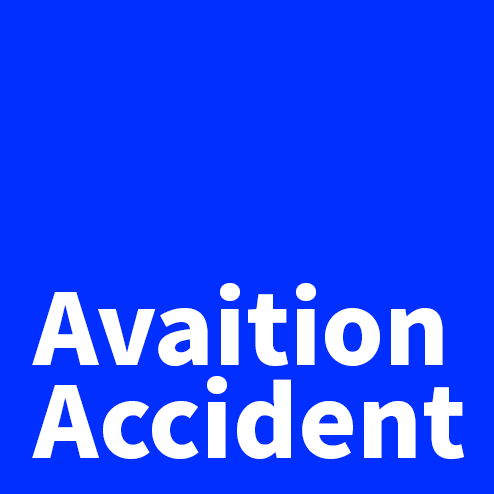
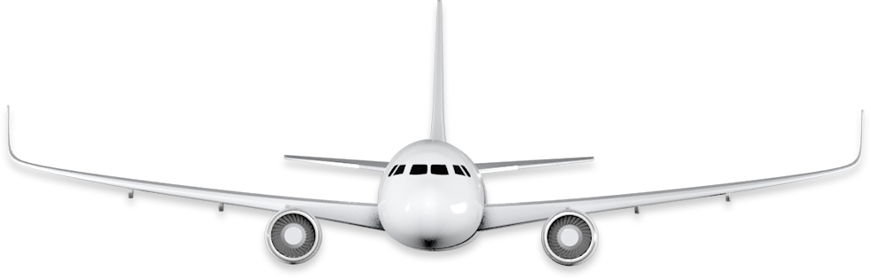

승무원이나 승객이 항공기에 탑승한 후부터 내릴 때까지의 사이에 그 항공기가 운항함으로써 일어난 사람의 사망, 부상, 항공기의 손상 등 항공기와 관련된 모든 사고.
1945년~1972년간 여객운송 실적(여객수X비행거리)은 약 70배로 증가한 반면 항공사고로 인한 사망률(여객 kg당 사망자수)는 1/14로 감소되고 있다.


승무원이나 승객이 항공기에 탑승한 후부터 내릴 때까지의 사이에 그 항공기가 운항함으로써 일어난 사람의 사망, 부상, 항공기의 손상 등 항공기와 관련된 모든 사고.
1945년~1972년간 여객운송 실적(여객수X비행거리)은 약 70배로 증가한 반면 항공사고로 인한 사망률(여객 kg당 사망자수)는 1/14로 감소되고 있다.
1950년대부터 2006년까지 일어난 1843건의 항공사고의 발생원인
1942년부터 2009년까지 1년 단위로 도출된 항공사고 발생건수
항공사고의 42%는 이륙, 50%는 착륙, 8%는 상공에서의 비행 중 발생하는 것으로 집계되었다.
특히 이륙 후 3분, 착륙 전 8분은 마의 11분이라 불리며 사고가 많이 발생하는 구간이다.
이륙 후에는 기체결함이나 위험상황을 발견해도 운항을 중단할 수 없으며
착륙 시에는 비행능력 이하로 출력을 떨어뜨리기 때문에 갑작스런 위기상황을 발견해도
대처방안에 한계가 있기 때문에 착륙시기에 사고가 가장 많이 일어난다.